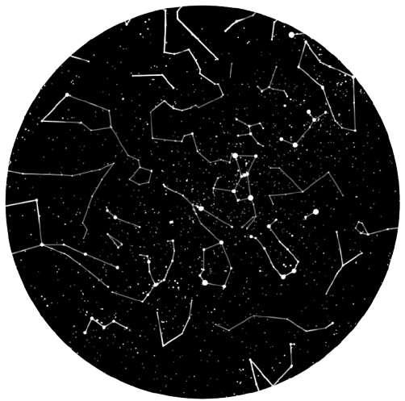

Toda grande história de amor tem sua música tema.
E essa sempre será a nossa. 🎶
Ed Sheeran

"O exato momento em que tive a certeza de que todos os meus amanhãs seriam com você."
Santo Estêvão - BA - BRASIL
28 DE MARÇO DE 2021 - 20:30
12.434371° S 39.260683° W
A palavra era OLHOS.
Eu amo seu olhar, eu te amo muito! ❤️
Meu amor, muito obrigado por cada segundo e por todos os momentos inesquecíveis que já passamos juntos. Sou imensamente feliz ao seu lado! Que a gente continue construindo nossa linda história e que venham muitos e muitos outros Dias dos Namorados para celebrarmos.
Eu te amo demais! ❤️
Com amor,
Danrlêi